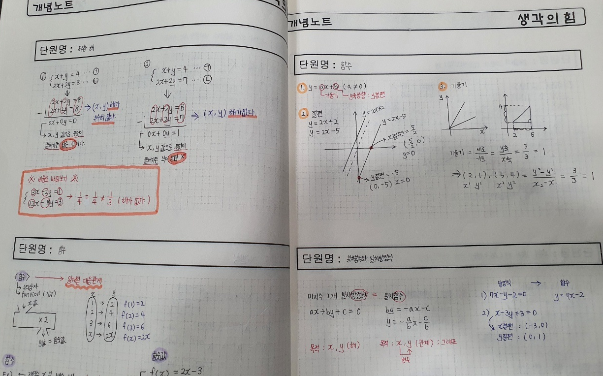
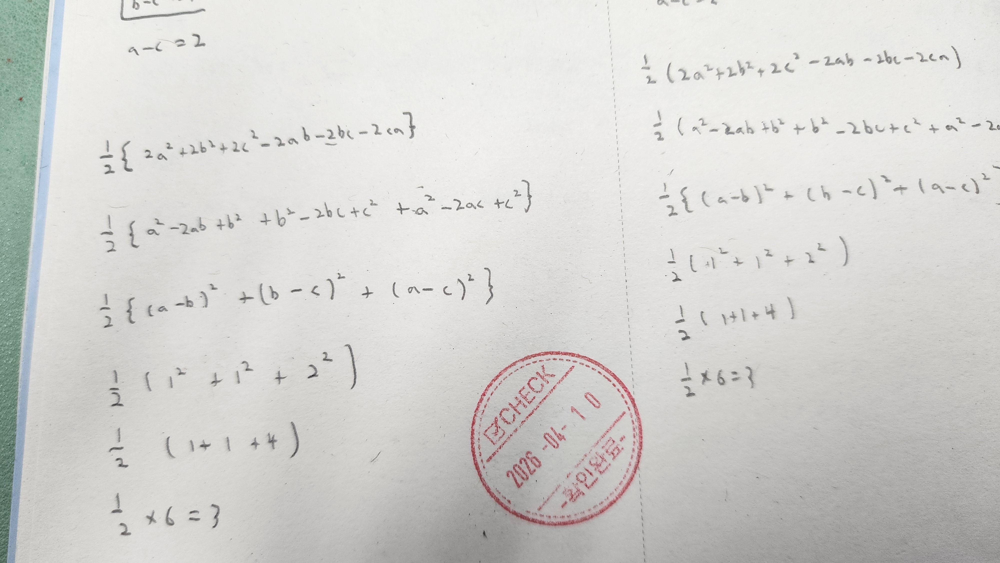
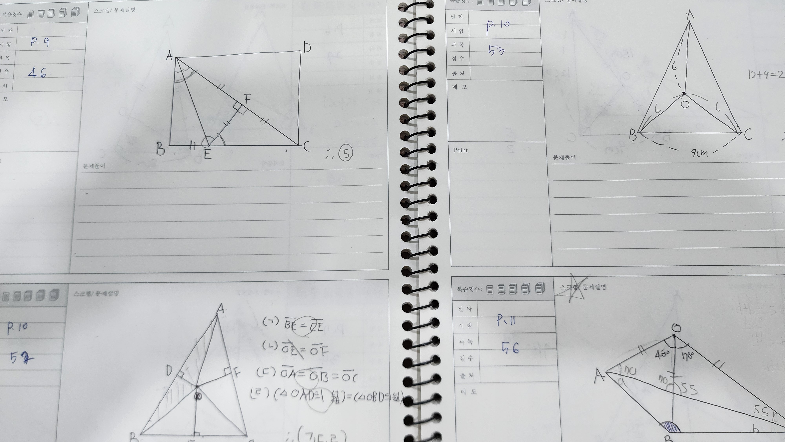

Individual Program
1:1 개별 맞춤 진도반
올바른 학습 습관이 수학적 사고의 뿌리를 만듭니다.
강사의 속도가 아닌, 아이의 속도로 설계된 완전 개인화 커리큘럼입니다.
이런 학생에게 맞습니다
수학을 처음 시작하는 학생
초등 전 학년 및 중등 1학년. 수학적 언어를 정립하고 공부 방법의 기초를 잡아야 하는 시기입니다.
학습 결손 보완이 필요한 학생
특정 단원의 구멍으로 인해 상위 개념 이해가 정체된 경우, 결손 지점부터 정확히 짚어드립니다.
자기주도 습관 형성이 필요한 학생
연습장 풀이, 오답 정리 등 실천적 프로토콜 훈련이 필요한 경우. 행동부터 바꿉니다.
생각의힘 1:1 관리 프로토콜
Protocol 01
개념의 구조화
원장과의 1:1 문답을 통해 개념의 정의를 정확히 이해했는지 확인합니다. 단순히 공식을 외우는 것이 아니라, 왜 그렇게 되는지를 스스로 설명할 수 있어야 합니다.
확인이 끝나면 개념노트에 자기 언어로 직접 정리합니다. 남이 쓴 것을 베끼는 것과, 스스로 구조화하는 것은 완전히 다릅니다.

Protocol 02
서술형 풀이 훈련
모든 문제는 수학 전용 연습장에 논리적 과정을 생략 없이 기술합니다. 답만 쓰는 습관은 이 단계에서 완전히 차단됩니다.
매 수업 시간 원장이 직접 풀이 과정을 전수 검사하고 확인 도장을 찍습니다. 도장 하나가 그날의 성실함을 증명합니다.

Protocol 03
감정 없는 포인트 시스템
과제 이행, 지각, 수업 태도를 객관적 수치로 관리합니다. 아이와 감정 소모 없이 성실성을 유지시키는 구조입니다.
기준은 입학 시 미리 공유됩니다. 규칙이 명확하면 아이도, 부모도 흔들리지 않습니다.
포인트 관리 항목
- 과제 제출 여부 및 완성도
- 수업 시작 시간 준수
- 연습장 풀이 성실도
- 수업 중 태도 및 집중도
Protocol 04
데이터 기반 피드백
월 2회 정기 진단평가를 통해 학습 성취도를 객관적 데이터로 분석합니다. 느낌이 아닌 수치로 아이의 현재 위치를 확인합니다.
분석 결과는 학부모님께 직접 공유됩니다. 무엇이 잘 되고 있는지, 무엇이 아직 부족한지 투명하게 전달합니다.

다른 프로그램 보기
하이브리드 전략반 보기Consultation
1:1 개별진도반 상담 문의
진단평가 후 원장이 직접 아이의 상태를 설명해 드립니다.
수지 신봉동 10년, 직접 확인하고 결정하세요.